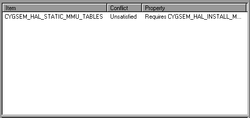

|
Screen Layout |
||
The following windows are available within the eCos Configuration Tool:
The layout of the windows my be adjusted to suit your preferences: see Settings .
This is the principal window used to configure eCos. It takes the form of a tree-based representation of the configuration items within the currently loaded eCos packages.
In the case of items whose values may be changed, controls are available to set the item values. These either take the form of check boxes or radio buttons within the tree itself or cells to the right of the thin vertical splitter bar. Controls in the tree may be used in the usual way; cells, however, must first be activated.
To activate a cell, simply click on it: it will assume a sunken appearance and data can then be edited in the cell. To terminate in-cell editing, click elsewhere in the configuration window or press ENTER. To discard the partial results of in-cell editing and revert to the previous value, press ESCAPE. Note that an asterisk appears
against configuration items which have changed since the configuration was last saved.
Cells come in three varieties, according to the type of data they accept:
In the case of string cells, you can double-click the cell to display a dialog box containing a larger region in which to edit the string value. This is useful in the case of long strings, or those spanning multiple lines.
Some items will appear disabled. In this case the item label and any associated controls and cells will be grayed. It is not be possible to change the values of disabled items.
You can right-click on an item in the configuration window item to display a pop-up menu which (depending on the type of the item selected) allows you to:
Properties - information relating to the currently selected item is displayed. The information is equivalent to that displayed in the Properties Window.
Restore Defaults - the default value of the currently selected item is restored.
Visit Documentation - causes the HTML page most closely relating to the currently selected item to be displayed. This has the same effect as double-clicking the URL property in the Properties Window. Note: if this fails to display the first time you select on it, try again after the browser has appeared.
View Header File - this causes
the file containing the items to be displayed. This is equivalent to
double-clicking on the File property in the Properties Window. The
viewer used for this purpose may be changed using the View Settings
menu item (see Settings
). Note that this operation is only possible when the current
configuration is saved, in order to avoid the possibility of
changing the source repository.
Settings
menu item (see Settings
). Note that this operation is only possible when the current
configuration is saved, in order to avoid the possibility of
changing the source repository.
Unload Package - this is
equivalent to using the Build Packages
menu item to select and unload the package in question.
Packages
menu item to select and unload the package in question.
This window exists to display any configuration item conflicts. Conflicts are the result of failures to meet the requirements between configuration items expressed in the CDL. See "Conflicts" in CDL Concepts .

The window comprises three columns:
This is the macro name of the first item involved in the conflict.
This is a description of the conflict type. The currently supported types are "unresolved", "illegal value", "evaluation exception", "goal unsatisfied" and "bad data".
This contains a description of the configuration item's property that caused the conflict.
Within the conflicts window you can right-click on any item to display a context menu which allows you to choose from one of the following options:
What's This? Gives a small description of the conflict window's purpose.
Locate the item involved in the conflict - this will cause the configuration window to display the item relating most closely to the selected conflict (the item mentioned in the first or third column depending on where you clicked). You can also double-click on an item to locate it.
Resolve the specified conflict - see Resolving conflicts.
This window displays any output generated by execution of external tools and any error messages that are not suitable for display in other forms (for example, as message boxes).
Within the output window you can right-click to display a context menu which allows you to:
This window displays the CDL properties of the item currently selected in the configuration window. The same information may be displayed by right-clicking the item and selecting "Properties".
Two properties may be double-clicked as follows:
URL - double-clicking on a URL property causes the referenced HTML page to be displayed. This has the same effect as right-clicking on the item and choosing "Visit Documentation".
File - double-clicking on a File
property in a saved configuration causes the File to be displayed.
The viewer used for this purpose may be changed using the
View Settings
menu item. Note that this operation is only possible when the
current configuration is saved, in order to avoid the possibility of
changing the source repository.
Settings
menu item. Note that this operation is only possible when the
current configuration is saved, in order to avoid the possibility of
changing the source repository.
This window displays a short description of the item currently selected in the configuration window. More extensive documentation may be available by right-clicking on the item and choosing "Visit Documentation".
|
Screen Layout |
||